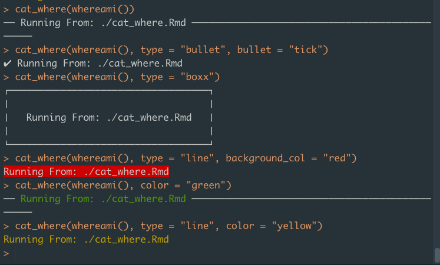

cat_where() is built on top of the cli package, which mean you can use parameters from the cli::cat_* and cli::col_* functions in cat_where().
cat_where() can invoke one of the 5 cat_* functions from cli. Use the ... to pass parameters to these functions. You can also use one of the col_* functions from cli to define the color of the text.
Here are some examples:
cat_where(whereami())
cat_where(whereami(), type = "bullet", bullet = "tick")
cat_where(whereami(), type = "boxx")
cat_where(whereami(), type = "line", background_col = "red")
cat_where(whereami(), color = "green")
cat_where(whereami(), type = "line", color = "yellow")